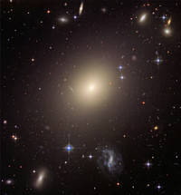
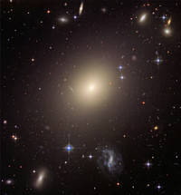

Tietoa tähtitieteestä
Tähtitieteellisen tutkimuksen piiriin kuuluu aivan kaikki ilmakehän ulkopuolella oleva -- Kuu, oma aurinkokuntamme, sen lähitähdet, oma galaksimme Linnunrata, sen naapurigalaksit ja koko universumin galaksipaljous.
Aina 1600-luvulle saakka kaikki tähtitieteelliset havainnot piti tehdä paljain silmin. Kaukoputken keksimisen myötä saatettiin nähdä kauempana olevia ja himmeämpiä kohteita, ja maailmankuvamme mullistui. Maa ei ollutkaan maailmankaikkeuden keskipiste, vaan planeettamme kiersikin Aurinkoa, joka sekin oli vain yksi monista tähdistä Linnunradan tähtimuodostelmassa.
Valokuvauksen keksiminen 1800-luvun alkupuolella mullisti tähtitieteen uudelleen. Entistä himmeämpiä kohteita saatiin havaittua, kun niistä voitiin tehdä pitkiä valotuksia. Lisäksi taivaan kohteet saatiin nyt ikuistettua jälkipolville ja niissä tapahtuvat muutokset voitiin huomata. näin löytyi esim. kääpiöplaneetta Pluto, pieni liikkuva piste tähtimeren seassa.
Radiotähtitiede keksittiin, kun sotilaskäyttöön kehitetty radioantenni havaitsi Linnunradan keskuksesta tulevaa radiosäteilyä. Jo aiemmin oli ymmärretty, että näkyvä valo on vain yksi kapea siivu säteilystä, jota sähkö ja magnetismi aiheuttavat.
Radiotähtitiede avasi tietä uusille havaintomenetelmille kuten infrapunatähtitieteelle ja röntgentähtitieteelle. Nämä keksinnöt avasivat meille viimein ikkunan maailmankaikkeuteen, joka oli ollut meiltä aiemmin piilossa. Ymmärtämyksemme maailmankaikkeudesta on syventynyt merkittävästi näiden uusien havaintojen valossa.
Tähtitiede on kuitenkin edelleen myös sitä, että menee ulos pimeän aikaan ja katsoo omin silmin taivaalle. Kuun vaiheet, kuun- ja auringonpimennykset, meteoriparvien aiheuttamat tähdenlennot ja useimmat planeetat näkyvät hyvin myös paljain silmin. Toisinaan taivaan halki saattaa kulkea komeetta upeine pyrstöineen, ja revontulia näkyy taivaalla Etelä-Suomessakin, kun Auringon magneettinen aktiivisuus on huipussaan.
Ammattitason tähtitiedettä voi edistää toisinaan myös harrastajavoimin. Jos omassa käytössä on kaukoputki, sen avulla voi tehdä sellaisia pitkäkestoisia tai nopeita havaintoja, joihin ammattilaislaitteet eivät ehdi. Tällä tavalla ovat suomalaisetkin tähtiharrastajat olleet mukana esimerkiksi gammapurkausten ja supernovien ammattitutkimuksessa.


 
